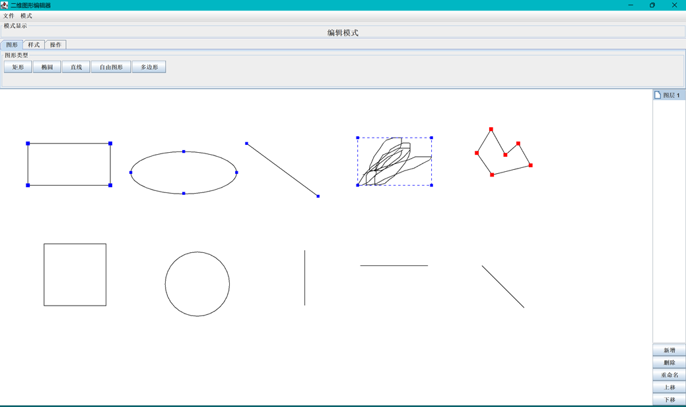
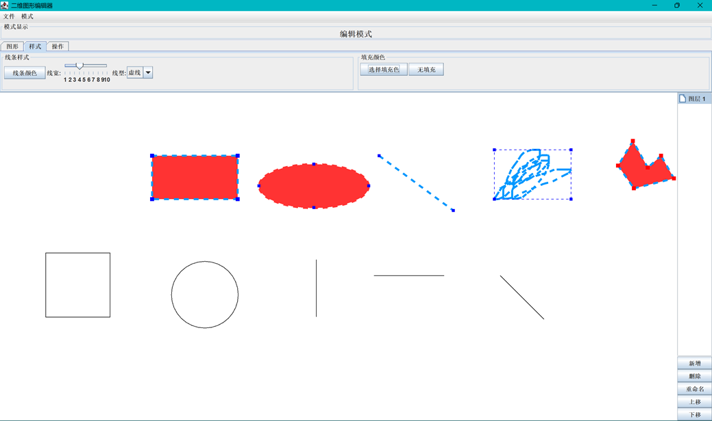
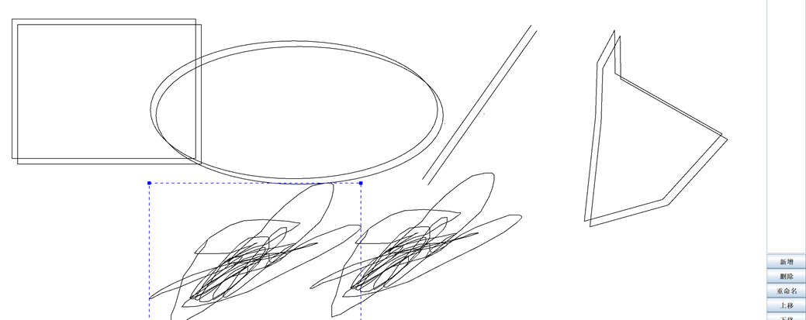
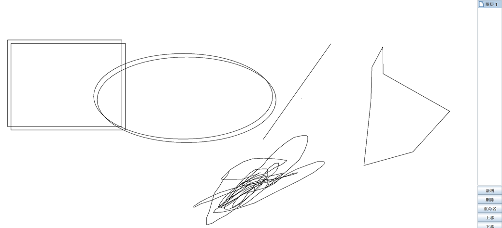
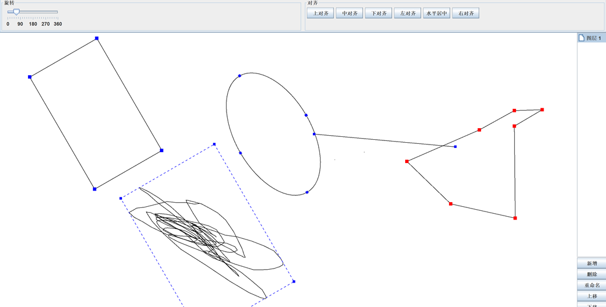
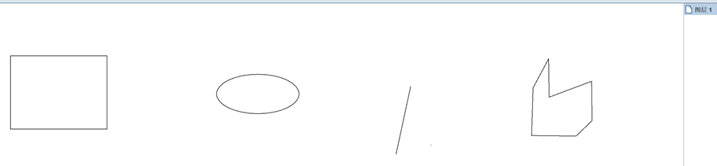
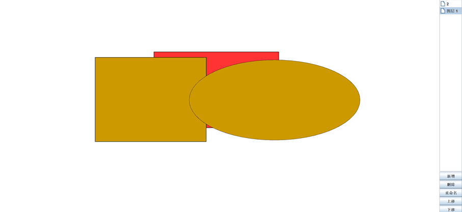
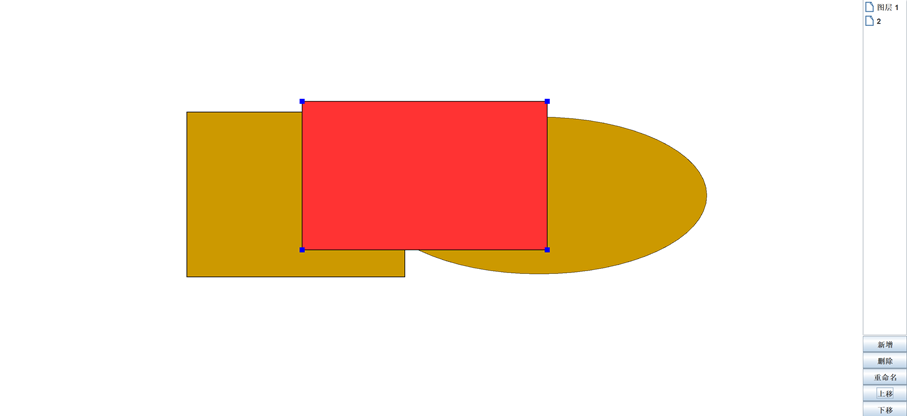

项目简介
独立设计并开的一款简易的图形编辑器，支持绘制矩形、圆形、线条、自由图形等多种形状，提供图形编辑、旋转、颜色调整、保存/加载等基本功能。整个项目基于面向对象设计思想，采用了抽象类、枚举、泛型等技术，架构清晰，灵活可扩展。
项目时间
2025 年 06 月 03 日 - 2025 年 06 月 27 日
核心功能
- 图形操作：实现了对图形的绘制、选中、拖动、颜色设置、旋转和控制点缩放等操作。
- 图层管理：支持图层的管理与多图形的选中操作，提高编辑灵活性。
- 保存与加载：实现了图形数据的序列化保存与加载功能，支持项目的持久化存储。
技术亮点
- 面向对象设计：通过抽象类 ShapeBase 统一定义图形接口，并通过多态实现不同图形（如矩形、圆形、线条等）的操作。
- 泛型：在图层管理模块中应用泛型，提升了代码的复用性与类型安全性。
- 枚举类型：用于定义图形类型（如 RECTANGLE、ELLIPSE 等），简化了工厂方法的设计。
- 设计模式：采用静态工厂模式统一创建图形对象，使用单例模式集中管理应用状态（如当前画笔样式、当前图层等）。
功能截图：
-
该页面展示了矩形、圆形、直线、自由图形、多边形等图形的创建过程及其在选择状态下的呈现效果。

-
该页面展示了矩形、圆形、直线、自由图形、多边形等图形的整体移动操作，同时支持笔画属性和图形填充的调整。

-
该页面展示了矩形、圆形、直线、自由图形、多边形等图形的复制、删除功能。


-
该页面展示了矩形、圆形、直线、自由图形、多边形等图形的旋转功能。

-
该页面展示了矩形、圆形、直线、自由图形、多边形等图形的顶点拖拽，调整大小。

-
该页面展示了矩形、圆形、直线、自由图形、多边形等图形的图层功能。

